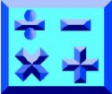

Math

Roman Numerals
Roman numerals are a numeral system originating in ancient Rome, adapted from Etruscan numerals. The system used in classical antiquity was slightly modified in the Middle Ages to produce the system we use today. It is based on certain letters which are given values as numerals. Although the Roman numerals are now written with letters of the Roman alphabet, they were originally independent symbols. The Etruscans, for example, used I ? X ? 8 ? for I V X L C M, of which only I and X happened to be letters in their alphabet. One folk etymology has it that the V represented a hand, and that the X was made by placing two Vs on top of each other, one inverted. However, the Etrusco-Roman numerals actually appear to derive from notches on tally sticks, which continued to be used by Italian and Dalmatian shepherds into the 19th century.
Babylonian mathematics
Babylonian mathematics refers to any mathematics of the peoples of Mesopotamia (situated in present day Iraq), from the days of the early Sumerians to the fall of Babylon in 539 BC. In contrast to the sparsity of sources in Egyptian mathematics, our knowledge of Babylonian mathematics is derived from some 400 clay tablets unearthed since the 1850s. Written in Cuneiform script, tablets were inscribed whilst the clay was moist, and baked hard in an oven or by the heat of the sun. The majority of recovered clay tablets date from 1800 to 1600 BC, and cover topics which include fractions, algebra, quadratic and cubic equations, the Pythagorean theorem, and the calculation of Pythagorean triples and possibly trigonometric functions (see Plimpton 322). The Babylonian tablet YBC 7289 gives an approximation to accurate to nearly six decimal places.
The Babylonian system of mathematics was sexagesimal (base-60) numeral system. From this we derive the modern day usage of 60 seconds in a minute, 60 minutes in an hour, and 360 (60×6) degrees in a circle. The Babylonians were able to make great advances in mathematics for two reasons. Firstly, the number 60 is a Highly composite number, having divisors 1, 2, 3, 4, 5, 6, 10, 12, 15, 20, and 30, facilitating calculations with fractions. Additionally, unlike the Egyptians and Romans, the Babylonians and Indians had a true place-value system, where digits written in the left column represented larger values (much as in our base ten system: 734 = 7×100 + 3×10 + 4×1).
Geometry
Geometry (Greek ?e?µet??a; geo = earth, metria = measure) is a part of mathematics concerned with questions of size, shape, and relative position of figures and with properties of space. Geometry is one of the oldest sciences. Initially a body of practical knowledge concerning lengths, areas, and volumes, in the third century B.C., geometry was put into an axiomatic form by Euclid, whose treatment - Euclidean geometry - set a standard for many centuries to follow. The field of astronomy, especially mapping the positions of the stars and planets on the celestial sphere, served as an important source of geometric problems during the next one and a half millennia.
Introduction of coordinates by René Descartes and the concurrent development of algebra marked a new stage for geometry, since geometric figures, such as plane curves, could now be represented analytically, i.e., with functions and equations. This played a key role in the emergence of calculus in the seventeenth century. Furthermore, the theory of perspective showed that there is more to geometry than just the metric properties of figures. The subject of geometry was further enriched by the study of intrinsic structure of geometric objects that originated with Euler and Gauss and led to the creation of topology and differential geometry.
Statistics
Statistics is a mathematical science pertaining to the collection, analysis, interpretation or explanation, and presentation of data. It is applicable to a wide variety of academic disciplines, from the natural and social sciences to the humanities, and to government and business.
Statistical methods can be used to summarize or describe a collection of data; this is called descriptive statistics. In addition, patterns in the data may be modeled in a way that accounts for randomness and uncertainty in the observations, and then used to draw inferences about the process or population being studied; this is called inferential statistics. Both descriptive and inferential statistics comprise applied statistics. There is also a discipline called mathematical statistics, which is concerned with the theoretical basis of the subject.
Linear Algebra
Linear algebra is the branch of mathematics concerned with the study of vectors, vector spaces (also called linear spaces), linear maps (also called linear transformations), and systems of linear equations. Vector spaces are a central theme in modern mathematics; thus, linear algebra is widely used in both abstract algebra and functional analysis. Linear algebra also has a concrete representation in analytic geometry and it is generalized in operator theory. It has extensive applications in the natural sciences and the social sciences, since nonlinear models can often be approximated by linear ones.
Back